习题解答或提示
练习题一
1.取x＝
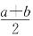
。2.a＝0时ab＝0，是有理数，否则ab是无理数。
3.如果P是质数，m是大于1的整数，易证
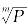
是 无 理数。如 果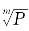
是有理数，设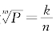
，那么nmP＝km，左端含因数P且个数是n的倍数，而右端不是，推出了矛盾。4.取y＝a＋（b－a）
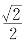
，那么y是无理数。由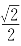
＜1可知a＜y＜b。5.
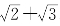
不是有理数。因为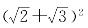
不是有理数。6.不一定。如
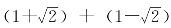
＝2。7.a和b一定是有理数。因为
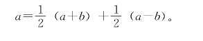
8.利用勾股定理。有了长度为
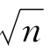
的线段MN，以MN为一直角边，作另一直角边NP＝1，那么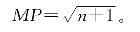
练习题二
1.要证
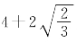
是无理数，只要证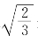
是无理数。为此，只要证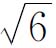
＝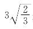
是无理数。要证（1－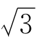
）3是无理数，可以展开、并项后证明。要证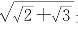
是无理数，只要证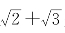
是无理数。最后，证明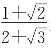
是无理数，可用反证法。设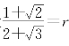
，r是有理数，则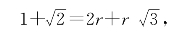
由此推出
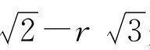
是有理数，平方后可推出 是有理数，矛盾。
是有理数，矛盾。
2.如果
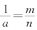
，那么a＝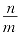
。3.用反证法，设
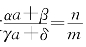
，那么mαa＋mβ＝nγa＋nδ，（mα－nγ）a＝nδ－mβ。
如果mα－nγ≠0，那么a为有理数，与已知相矛盾。如果mα－nγ＝0，那么nδmβ＝0，于是
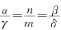
，推出αδ＝βγ，即αδ－βγ＝0，也与已知相矛盾。4.取
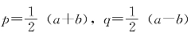
，显然有p＋q＝a，p－q＝b。由假设知p为有理数，而q＝a－p，所以q为无理数。5.如果
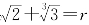
，r是有理数，则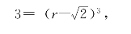
展开后可得到r3－3r2
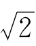
＋3·2r－ 2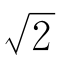
＝3，由此推出（3r2＋2） 是有理数，矛盾。
是有理数，矛盾。
6.和上题类似，把
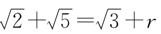
两端平方后，整理成2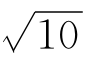
＝…，两端再平方。7.利用练习题一的第8题。
8.如果
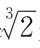
是整系数二次方程式mx2＋nx＋p＝0的根，则m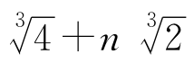
＋p＝0。如果n＝0，推出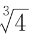
是有理数，矛盾。如果p＝0，也推出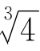
或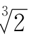
是有理数，矛盾。于是mnp≠0。由求根公式得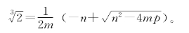
显然
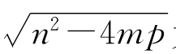
为无理数。把这个等式两端立方，并项后得出矛盾。证明中注意用到n2－4mp＞0。9.设
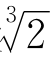
＋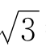
＝x，则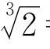
＝x－ ，两端立方，得
，两端立方，得
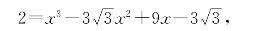
移项，得
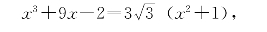
两端平方，即得所要的方程式。
10.方程式x3－x2－x＋2＝0有无理根。因为左端当x＝－1时为正，x＝－2时为负，故在－2与－1之间有根。但这根不是整数，所以必为无理数。
11.把x1＝ 3－
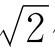
代入方程式x3＋mx2＋nx＋p＝0，整理后得到P＋Q ＝0，由此推出P，Q＝0。再把x2＝ 3＋
＝0，由此推出P，Q＝0。再把x2＝ 3＋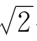
代入，可以发现x2也是它的根。设x3是另一根，则x3＝－m－x1－x2。
12.把全体实数分成3部分：（1）有理数；（2）m
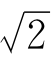
形式的数，m是正整数；（3）其他无理数。（1）和（2）放在一起可以排成一行与（2）对应，（3）和自己对应。13.把全体实数分成3部分：（1）代数数；（2）mα形式的超越数，这里α是取定的一个超越数，m是正整数；（3）其他超越数。再用上题的方法。
练习题三
1.此题相当于要求计算
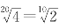
。已知设（1＋x）5＝，则＝1＋x。于是展开（1＋x）5得
把x＜0.09回代一下，估出
再回代，得
再回代，得
所以
即平均年增长率高达7.2%。注意在回代过程中，对x3，x4并不真算，只要略加估计。此题也可用下面第5题推出的公式。
2.，误差小于。
3.，两端立方得
所以得
比（14）式略好。
4.在命题8中取方程式为x2－a＝0或x3－a＝0，分别得到命题6和7。
5.设命题8中的方程式为x5－a＝0，a≥0。设5的一个近似值为x1，用（x－x1）2来除x5－a。除法可这样进行：设y＝x－x1，那么x＝y＋x1，代入（x5－a），得
两端用x＝代入，又设－x1＝d，便得
若右端比｜d｜更小时，是的更好的近似值。
6.由（15）式可知，不管x1－是正是负，当n≥2时总有
这里
令xn－＝dn，则dn＜xn，由（15）式得
从而知
所以xn与之差，当n足够大时可任意小。
7.设xn＋1＝），由（32）式可知，当n≥2时有≥0，于是和上题有类似的情形。
8.如果｜x｜≥1＋｜a1｜＋…＋｜an｜，那么
所以x不是方程式的根。
练习题四
1.还有，如便是。
2.设x＝，x＋1＝，那么
它的前5个近似分数是0，1，。
3.的连分数展式中的近似分数是，故3块8分，4块11分，11块3角最合理。
4.设x＝，那么x2－1＝，
所以的近似分数是1，，…
5.根据
对k作数学归纳。当k＝0，命题显然成立。如果命题对k－1成立，那么
[a2，a3，…，a2k]≤[a2，a3，…，an]≤[a2，a3，…，a2k＋1]。
于是
[a1，a2，…，a2k＋1]≤[a1，a2，…，an]≤[a1，a2，…，a2k]。
进一步即得所要的不等式。
6.对连分数的长度k作归纳。当k＝0时，
命题成立。设命题对长为k－1的连分数成立，证明它对长为k的连分数也成立。
设
由归纳假设可知
即｜mk－1nk－nk－1mk｜＝1。但
于是qk＝mk－1，qk＋1＝mk，易计算出
7.设x＝[a，b，c，b，c，b，c，…]，那么
两端整理后可知，x满足一个整系数二次方程式。另一题解法与此类似。
8.设x＝，那么
即可展成连分数。一般说来，任一个二次整系数方程式的正实根都能展成连分数，但证明起来稍困难一些。你不妨具体算几个试一试。
练习题五
1.根据上一章练习题2、5、6就可解本题。
2.如第75页图5-6所示，
∠AEF＝∠BEA＝∠FAE＝∠ABE，
可知两个等腰三角形△AEF∽△BEA，所以
BE∶AE＝AE∶FE。
但由正五边形的角∠BAE＝108°，可求出∠ABE＝36°，所以∠BAF＝∠BFA＝72°，于是AE＝BF。本题也可用面积证法。设
那么
3.利用数列1，1，2，3，5，8，13，21的性质，先比较第8个和第13个。如果第8个较重，可淘汰第13个至第21个的球，否则淘汰第1个至第8个的球，剩下13个球，再取第5个、第8个来比，直到剩下两个球。
4.（1）由λ2＋λ＝1，得
所以
这里表示的小数部分。于是
（2）如果，设
这里δ1，δ2是小于1的正数，而
于是n＝kλ2＋λ2δ1，m＝kλ＋λδ2，两式相加得n＋m＝k（λ2＋λ）＋λ2δ1＋λδ2＝k＋λ2δ1＋λδ2，于是n＋m－k＝λ2δ1＋λδ2。左端是整数，右端是小于1的正数，矛盾。
5.由kα＜n可得k≤。这样的k有个。
6.由5题知，满足＜n的整数有[λn]个，满足＜n的整数有[λ2n]个，由λ2n＋λn＝n可得[λ2n]＋[λn]＝n－1，即形为或的整数不超过n－1的共有n－1个。由题4（2），它们互不重复，于是得证。
7.由以上3题可知，取胜数字表上的数确实是满足：
的数列。因为造表的原则是①A1＝1，②Bn－An＝n，③An，Bn递增地走遍全体正整数，且不重复。满足这3条的数列是唯一确定的，而恰好有这3条性质。
要说明按表上的数字来拿，必然取胜，只要说明在轮到对方拿时，如果石子数是An，Bn，那么不管对方如何拿，石子数会变得不和表上的任一对数符合，并且，你总有办法又拿一次使它拿光或回到表上来。可分这几种情形：
（ⅰ）对方拿光一堆，或拿得使两堆相等，你总可一次拿光而胜。
（ⅱ）对方把An，Bn变成C，D，如果C－D≥n，那么必有D＜An，所以D在表中An、Bn之前出现。你总可以在C中拿去一些，使结果成为表上的一对数字。
（ⅲ）如果对方把An，Bn变成C，D，而1≤C－D＜n，设C－D＝l。如果D＞Al，你可从C、D中同时拿去（D－Al）个，使结果为Al，Bl。如果D＜Al，拿法与（ⅱ）同。D＝Al是不可能的，因为对方仅从一堆中拿石子，不会使两个数都变小。
练习题六
1.如果a＝，b＝，由logab＝得amn＝b，即an＝bm，从而pnlm＝qnkm。由于皆为最简分数，所以推出pn＝km，qn＝lm。由于可设为最简，又可以推出＝rm，且＝rn。这里r是有理数。
2.只有b＝1时logab才是有理数。因为如果
那么amn ＝b，an＝bm，a是方程式xn＝的根，即为lmxn＝km的根。
3.如果n为奇数或0时，由sinφ为有理数，可知sinnφ也是有理数，因为这时sinnφ可展成sinφ的多项式。如果n为偶数时，或者sinnφ＝0，此时sinφ＝0，±1，±；或者cosφ为有理数，这时sinφ＝，使为整数。
4.注意由
为有理数可推出cos2 （φ－）为有理数，从而可推得cos2（φ－）为有理数。由于φ＝π，所以可知
必为0，±1，。
5.如果，那么为有理数，于是为有理数，。
练习题七
1.设an＝kn＋0.…，kn是整数，那么kn是递增有界的。[我们把末尾是k999…的小数，改写为（k＋1）000…形]于是从某个n0起，kn0＝kn0＋1＝kn0＋2＝…＝k*。同理，当n＞n0时，≤…≤≤…≤9，所以从某个n1≥n0起，又有＝…＝≤9。类似地可定出≤9，于是，α＝k*＋…便是所求的比an都不小的数中最小的一个。
2.是阿基米德数域。加、减、乘显然封闭，除法的封闭性可用分母有理化的方法来证明。阿基米德公理是显然成立的。
3.利用连续函数的中间值定理，可以证明这样的直线一定存在，也可以用初等数学的方法来证明。
如下图，过凸多边形的每一顶点作一条平行于l的直线。其中必有相邻的两条CD、AB，使CD下方多边形面积S1和AB上方多边形面积S2，都不超过整个多边形面积的一半。设A、B、C、D在多边形周界上，则ABDC成一梯形，上下底为AB、CD，面积为S。不妨设
S2≤S1≤S2＋S，
第3题图
问题就是如何找到直线l1∥l。把梯形ABDC分成两部分x1和x2，使下方的x1与S1相加等于x2＋S2，即
于是
知道了x1，x2及AB，CD的长及AB，CD间的距离后，所求直线l1与AB的距离可以列出一个二次方程式求出。下略。
第4题图
4.应用连续函数的中间值定理可以给这个题肯定的回答。取一个标准射线l，在平面上一定有和l方向相同的射线l1，l2，l1和l2分别平分甲、乙两块蛋糕。现在让l的方向慢慢转动一个角θ，l变为l（θ）。对应地，l1，l2变为和l（θ）平行的l1（θ）和l2（θ），但l1（θ），l2（θ）仍分别平分甲乙两块蛋糕如下图。当θ从0连续地变到π时，l1（θ），l2（θ）又回到了开始的位置，只是方向倒转了。本来l1在l2的右边，最后l1却到了l2的左边。这样，中间一定有一个角度θ，使l1（θ）和l2（θ）重合。这重合的射线，便是下刀的地方。
练习题八
1.这里只证明性质（2），其他的请读者自己证。设αn、βn都是无穷小列。按定义，有单调无界的正数列An、Bn使
于是
只要证明是单调无界数列即可。由的单调性，显然单调。剩下的是证明无界。由于
所以它是无界数列。
2.这里只证（2）、（3）。
如果，按定义，有无穷小列αn，βn使an＝a＋αn，bn＝b＋βn，于是有
（an±bn）＝（a±b）＋（αn±βn），
（αn±βn）是无穷小列，由定义得
又有
an·bn＝（a＋αn）（b＋βn）＝ab＋αnb＋βna＋αnβn，
由于（αnb＋βna＋αnβn）是无穷小列，所以。
至于（3），则有
只要证明是有界量即可。由a≠0，又有无界列An使｜αn｜＜，不妨设n大得使An＞，则，这使｜αn｜＜，从而＜，即是有界量。
3.设递增有界数列为a1≤a2≤…≤an≤an＋1≤…，把所有满足α≥an（n＝1，2，…），即不被任一an超过的实数α归为B类，剩下的归为A类，那么A类无最大数。因为如果x是A类数，则有an，使x＜an，那么，y＞x，y也是A类。由完备公理，B类有最小数b。易证b是an的极限。
4.记，即an＋1＝，因而
由此可见a1，a3，a5，…单调递减有界而a2，a4，a6，…单调递增有界。又因（可用归纳法证明），可见{a2n＋1}和{a2n}极限相同。在等式an＋1＝两端取极限，可知极限λ满足方程式λ2＋λ＝1。
5.由于an＋1＝，由an＜2可推出an＋1＜2。于是由a1＝＜2，即得一切an＜2。从而＝2＋an＞2an＞，{an}递增，因而是递增有界列，所以有极限。
6.利用本章无穷小列性质（2），易证两个无穷小列排在一起之后仍为无穷小。方法是：在{an}中添上一些0项，得到，{βn}中添些0项，得到，则，都是无穷小列。再把0项错开相加，得是无穷小。而相当于把{αn}，{βn}排到一起。
7.由an＋1＝1＋可知0＜an＜2，所以为有界列。由于
可见a1，a3，a5，…递增而a2，a4，a6，…递减，因而{a2n＋1}、{a2n}都有极限。又由
可见两极限相同。
8.如果{αn}中有无限项αn1，αn2，…，αni，…均大于ε，则{αni}是一个非无穷小的子列，与{αn}为无穷小矛盾。
如果对任意的ε＞0，{αn}中只有有限项绝对值大于ε。设这有限项中下标最大的为N（ε），那么当n＞N（ε）时，必有｜αn｜＜ε，取ε＝，…
令
则An是递增无界列，而由的定义知｜αn｜。